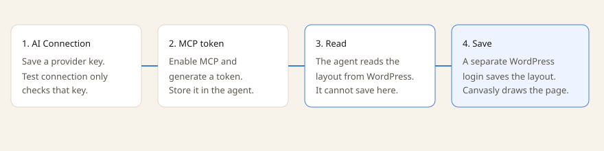

Canvasly Pro does not call an AI model to build pages. WordPress stores a provider API key and acts as a read-only Model Context Protocol (MCP) server. An outside agent, such as Cursor or Claude, reads layouts through MCP, then writes them back through a separate WordPress address. Canvasly itself never loads this. It exists only while Canvasly Pro is active.
Updated . Covers Canvasly 0.12.76 and Canvasly Pro 0.6.3.

The key test and the MCP connection are not the save. Saving a page still needs a WordPress user who can edit layouts.
What you set up
Open Canvasly → AI Connection. Only a site administrator can open it. Two stored settings are used:
Public connection: provider, model, Azure address when you use Azure, and whether MCP is on.
Secrets: the encrypted API key, and a hash of the MCP token. The plain key and the plain token are not kept in the page.
Both are removed if you uninstall Canvasly Pro. The editor never receives the API key. A status check reports only whether a key is stored.
Providers
Only a provider on this list can be saved. An arbitrary web address is rejected, so this screen cannot be pointed at a private server. Every host must be HTTPS on port 443, with no username or password in the address. Localhost, addresses ending in .local or .internal, raw IP addresses, and lookalike hosts are rejected.
Provider
Host used for the test
How the test sends the key
OpenAI
api.openai.com/v1
Bearer token
Anthropic
api.anthropic.com/v1
x-api-key
Gemini
generativelanguage.googleapis.com/v1beta
x-goog-api-key
Azure
Your own host under openai.azure.com, cognitiveservices.azure.com, or services.ai.azure.com
api-key
Perplexity
api.perplexity.ai
Bearer token
Cursor
api.cursor.com/v1
Bearer token, and the test calls /me
Groq
api.groq.com/openai/v1
Bearer token
Mistral
api.mistral.ai/v1
Bearer token
DeepSeek
api.deepseek.com
Bearer token
An Azure host must be a single name in front of one of those three endings. Add-ons may add providers, and those hosts still have to pass the same HTTPS checks.
The API key and Test connection
The key is encrypted before it is stored. A key must be 20 to 256 characters, with no spaces and no web address scheme such as https://. Leave the password field blank when you save if you want to keep the key already stored.
Test connection is the only time WordPress calls the provider. It checks the provider’s model list. Cursor is checked at /me. Azure is checked at /openai/models?api-version=2024-10-21. A successful response means the key was accepted. There is no chat, no completion, and no request that generates a layout. The model name you save is not sent to the provider.
Turn on MCP
WordPress is the MCP server. It does not forward those requests to OpenAI, Anthropic, or any other provider. The agent connects to your site:
POST /wp-json/canvasly-lite/v1/mcp
The protocol version reported to the client is 2024-11-05. The server name is canvasly-lite. This address is hidden from the public REST index.
The address stays closed until both of these are true: Enable MCP is checked, and a token exists. If MCP is on and there is no token, the screen warns you, and the address keeps answering with “forbidden” (HTTP 403).
Token
A token starts with lbai_ and then 48 hexadecimal characters. WordPress stores only a hash of it, a short hint of the first 8 characters, the administrator who created it, and the time. The full token is shown once, for two minutes. Generate a new one to replace it. Revoke deletes it. The person who owns the token must still be an administrator.
Send it on every MCP request in one of these ways:
Authorization: Bearer lbai_...
X-Canvasly-Lite-MCP-Token: lbai_...
A person who is already logged in to WordPress and can edit theme options can also call this address without the token. Each accepted call acts as the token’s owner, and that person must be allowed to edit layouts. After 60 calls in a minute, further calls are refused until the minute passes.
What the agent can read
MCP can list and read layouts. It cannot create, update, or delete them.
Request
What comes back
initialize
Protocol version, server info, and a note that the tools are read-only.
ping
An empty result.
tools/list and tools/call
The three tools below.
resources/list
One entry for each Canvasly page this person can edit.
resources/read
The layout for an address like canvasly-lite://document/123.
prompts/list
Always empty. No prompts are registered.
Tool
What it returns
list_layout_documents
Up to 50 posts or pages that store a Canvasly layout and that this person can edit. An optional title search narrows the list.
get_layout_document
One page: its number, title, type, status, and layout.
get_layout_schema
The catalog of units and shared settings, plus the page layout when a page number is set. Compact results are the default. Empty and default settings are left out so the tree stays small. Saving fills those defaults back in.
How the agent saves a page
Writes do not go through MCP. They use the layout routes below. The MCP token proves who is calling MCP. It does not, by itself, allow the save. The agent also needs a WordPress login, or another WordPress credential, that can edit layouts.
Address
What it does
GET /wp-json/canvasly-lite/v1/layout-schema
The catalog of units. Requires permission to edit theme options.
GET /wp-json/canvasly-lite/v1/layout-schema/{id}
The catalog plus the layout of that page.
POST /wp-json/canvasly-lite/v1/layout-schema/{id}
Checks the layout and saves it. Add render=1 to also receive the HTML.
POST /wp-json/canvasly-lite/v1/layout-schema/render
Checks the layout and returns HTML without saving.
The catalog id is canvasly-lite.layout.v1. A layout is a version, page settings, and a list of units. Each unit has an id, a type, settings, children, and an optional slot. The agent is told to:
Use only unit types from the catalog. A type that accepts children may contain other units.
When a type uses slots, set the child’s slot to the matching item id.
Use only setting names that belong to that unit or to the shared settings. Unknown names are dropped on save.
Apply a global class with global_class, using names that already exist, separated by spaces.
Reuse a saved component with type component and its component id.
Keep existing unit ids. Leave the id off, or start a new one with n_. The save step assigns an id if one is missing.
Send the layout to the save address to keep it, or to the render address to preview HTML. Do not invent the page’s HTML. Canvasly turns the layout into the page.
A save can be the full catalog response, an object that contains a document, or an object that has a root list.
The working loop
An administrator saves a provider and API key, then uses Test connection. That only proves the provider accepts the key.
The administrator turns on MCP and generates a token. The token is stored in the agent, not in the page.
The agent sends JSON-RPC to /wp-json/canvasly-lite/v1/mcp with the bearer token.
It reads the catalog and, if needed, one page. It edits that layout with whatever model the agent is already using.
It posts the layout to /wp-json/canvasly-lite/v1/layout-schema/{page number} with WordPress credentials that can edit the page. Canvasly checks it, saves it, and the public page is drawn from that layout.
The provider key stored in WordPress is not part of that loop. Pro does not send the layout, the prompt, or the model id to OpenAI, Anthropic, Cursor, or the other listed hosts, except for the model-list check used by Test connection.
Limits that stay in place
Canvasly by itself does not register these addresses. They exist only while the Pro AI module is active.
The MCP address and the AI Connection addresses are left out of the public REST index.
MCP tools cannot create, update, or delete layouts.
Reading a page still checks that this person may edit that page.
Saves use the same checks and the same page renderer as the public site.
Provider requests do not follow redirects, require a valid certificate, and refuse any address that is not on the list.